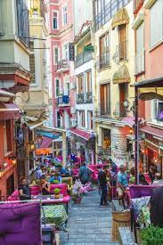

Đôi khi, cha mẹ tôi, cả hai cùng biến mất. Chuyện xảy ra một lần vào mùa đông 1957, khi anh tôi được đưa lên hai tầng lầu để sống cùng với cô chú của chúng tôi. Còn phần tôi thì một bà cô khác tới Nişantaşi vào một buổi chiều để mang tôi về nhà bà, ở Cihangir. Bà làm đủ chuyện để cho tôi đừng bị bực mình. Vào lúc chúng tôi vô xe ngồi (một chiếc Chevrolet đời 1956, rất phổ biến tại Istanbul vào những năm 1960), bà nói, “Cô đã bảo Ҫetin tối nay mang cho cháu một ít sữa chua,” và tôi nhớ mình chẳng thích thú gì sữa chua, nhưng lại quan tâm thật nhiều tới sự kiện cô chú tôi có một người tài xế. Khi chúng tôi tới khu nhà lớn của họ (ông tôi cất nó lên, và sau này tôi sẽ sống tại một trong những căn hộ của nó) thì tôi khám phá ra rằng khu nhà chẳng có thang máy, không có lò sưởi, phòng thì nhỏ xíu, và tôi thật là thất vọng. Sự tình còn tồi tệ thêm, ngày hôm sau, trong khi buồn bã cố làm quen với nhà mói, tôi gặp một sự ngạc nhiên khó chịu khác: thức dậy sau giấc ngủ trưa, tôi thấy ai mặc cho mình một bộ đồ ngủ của con nít, và tôi lớn tiếng gọi người làm theo thói quen ở nhà mình – “Emine Hamm, tới thay đồ cho tôi” – và chỉ nghe mấy tiếng hừm hừm đáp lại. Có thể do vậy, trong những ngày còn lại ở nhà mới tôi cố gắng xử sự nhử một đứa già dặn hơn so với tuổi thực của mình, và ra bộ ta đây cho oai. Một buổi tối, trong lúc ngồi ăn tối với bà cô, ông chú dượng Şevket Rado (nhà thơ và nhà xuất bản, từng in cuốn tranh sao chép Melling mà tôi đã có nói tới), đứa anh em bà con mười hai tuổi Mehmet, với một thằng nhỏ giống tôi trong bức tranh chép rất kitsch treo trên tưởng có vẻ bực bội từ cái khung trắng nhìn xuống bàn ăn và trong khi ăn như thế; tôi vọt miệng nói thủ tướng Adnan Menderes là chú của tôi. Câu nói không được đón nhận với sự tôn trọng như tôi hy vọng; trong khi mọi người ở bàn bật cưởi rinh rích, tôi cảm thấy mình bị đôi xử thật là tệ hại, vì tôi thực lòng tin thủ tưởng là chú tôi!

.
Nói đúng ra, tôi chỉ tin có một nửa. Chú Özhan và Thủ tưởng Adnan, tên của cả hai gồm năm mẫu tự, và kết thúc bằng hai mẫu tự giống nhau. Thủ tướng thì mới ở Mỹ về, còn ông chú của tôi thì đã ở đó nhiều năm. Tôi nhìn thấy hình của cả hai nhiều lần mỗi năm (hình thủ tướng thì trên báo chí, còn hình ông chú thì trên bàn phòng khách bà nội tôi) và, trong một số hình, hai người trông rất giống nhau, chính điều này gây ra sự lầm lẫn thành thực kia. Càng nhiều tuổi thêm, sự để ý của tôi tới cơ chế tâm linh này ngày một yếu đi, làm rối mù rất nhiều niềm tin, quan điểm, định kiến và những sở thích thẩm mỹ khác. Thí dụ, tôi thực tình tin hết mức là nếu hai người có tên giống nhau thì tính tình sẽ giống nhau; một từ lạ lẫm – tiếng Thổ hay tiếng nước ngoài thì cũng vậy – nghĩa của nó phải giống như một từ đánh vần như nó; linh hồn một người đàn bà cười má lúm đồng tiền thì mang một phần linh hồn của một người đàn bà cười má lúm đồng tiền mà tôi đã biết từ trước; tất cả những người mập đều giống nhau; những người nghèo có tình anh em với nhau, và cái tình anh em của họ như thế nào thì tôi chịu thua; phải có một liên hệ giữa đậu Hà Lan và Brazil – không phải chỉ vì Brazil viết theo tiếng Thổ là Brezilya còn hạt đậu là bezelye, mà là còn vì trên lá cờ của nước Brazil có một hạt đậu Hà Lan lớn, hình như vậy. Tôi đã từng nhìn thấy rất nhiều người Mỹ làm y như vậy, khi họ cho rằng có một liên hệ giữa Thổ Nhĩ Kỳ [Turkey] như là một xứ sở và chú gà Tây [turkey]. Trong đầu tôi mãi cho đến giờ ông chú tôi và ông thủ tưởng vẫn có liên hệ với nhau; một khi liên hệ đã được thiết lập thì sẽ không gì có thể chia cắt chúng, vì vậy khi nghĩ đến một người bà con xa mà tôi đã có lần nhìn thấy ngồi ăn trứng với rau pina trong một cái quán (một trong những lạc thú lớn lao của thời ấu thơ của tôi là chạy ào tới một người thân hay quen mỗi khi tôi đi vào thành phố), một phần trong tôi tin chắc rằng nửa thế kỷ sau người bà con đó hiện vẫn đang ăn trứng với rau pina.
Cái tài năng của tôi trong việc tô điểm cuộc đời của minh bằng những ảo tưởng nhẹ nhàng đã phục vụ tôi thật đắc lực trong căn nhà mới mẻ này, nơi tôi không là cái gì quan trọng, cũng chẳng thuộc về. Thế là chẳng mấy chốc, tôi tạo ra cho mình một vài kinh nghiệm dữ dằn. Buổi sáng, sau khi ông em họ rời nhà để tới trường trung học Đức, tôi sẽ mở những cuốn sách to, dày, đẹp đẽ bằng tiếng Đức của ông (một ấn bản Brockhaus, tôi nghĩ vậy), và ngồi xuống bàn, tôi sẽ chép ra những dòng chữ ở trong đó. Tôi đâu có biết tiếng Đức, cũng đâu biết đọc, nhưng tôi làm việc này mà chẳng cần thông hiểu gì, và cứ thế vẽ thứ văn xuôi mà tôi nhìn thấy ở trước mặt. Tôi vẽ một hình y chang của mỗi một dòng và mỗi một câu. Sau khi vẽ xong một từ, trong từ có một trong những con chữ gôtic khó (thí dụ g, hay k), tôi làm như những nhà tiểu họa Savefi khi họ vẽ hàng ngàn chiếc lá của một cây tiêu huyền lớn, từng lá một. Lâu lâu, để cho đỡ mỏi mắt, tôi nhìn các khoảng trống giữa những căn nhà, những lô trống, những con phố dẫn xuống phía biển và đưa mắt nhìn những con tàu lên xuống vịnh Bosphorus.
Chính là tại Cihangir (nơi chúng tôi cũng sẽ chuyển về ở khi tình hình tài chính khó khăn hơn) mà tôi học được một điều: thành phố Istanbul không phải là một thiên hình vạn trạng vô danh của những cuộc đời bên trong các bức tường – một khu rừng của những căn nhà nơi chẳng ai biết ai chết, ai sống, hay ai đang ăn mừng, và ăn mừng cái gì – mà là một quần đảo của những lân bang láng giềng, nơi mọi người đều biết nhau. Khi nhìn ra cửa sổ, tôi không chỉ nhìn thấy Bosphorus và các con tàu lên xuống những dòng kênh quen thuộc mà còn trông thấy những khu vườn giữa các căn nhà, những tòa biệt thự cổ xưa chưa bị ủi sập, và những đứa trẻ vui đùa giữa những bờ tường vụn vỡ. Như những căn nhà nhìn ra vịnh Bosphorus, đằng trước nhà có một lối đi rải sỏi đưa xuống bãi biển. Vào những chiều tuyết đổ, tôi sẽ ngồi với bà cô và ông em họ cùng lối xóm nhìn ra xa xa, trong lúc đám trẻ con ồn ào trượt theo lối đi xuống phía biến, trên xe trượt, những chiếc sled, hay những mảnh gỗ.
Trung tâm của kỹ nghệ phim ảnh Thổ Nhĩ Kỳ – mỗi năm sản xuất bảy trăm phim vào thời kỳ đó và được xếp hạng nhì trong số những nền kỹ nghệ phim ảnh lớn nhất trên thế giới sau Ấn Độ – tọa lạc ở Beyoglu, phố Yecilcam, chỉ cách đây chừng mười phút, và bởi vì nhiều nghệ sĩ sống ở Cihangir, thành thử lối xóm ở đây đầy những “chú” và những “cô” mệt mỏi, mặt mày trát đầy son phấn, đóng cùng một vai, trong mọi phim mà họ đã từng đóng. Bởi vậy, khi mấy đứa trẻ nhận ra nghệ sĩ, là chúng nhận ra qua nhân vật mà họ đóng (thí dụ, Vahi Oz luôn đóng vai anh mập già chuyên dụ dỗ mấy cô người làm trẻ trung, ngây thơ), và khi nhận ra rồi là chúng chạy theo họ, suốt cả con phố. Ở đầu lối đi dốc, vào những ngày mưa, xe hơi sẽ bi trươt xuống theo nền đường ướt rải sỏi, và xe tải phải cực nhọc mới lên được trên đầu lối đi; vào những ngày nắng, một chiếc xe minibus sẽ xuất hiện, không hiểu từ đâu, và các nghệ sĩ, chuyên viên ánh sáng và “đoàn quay phim” sẽ ùa ra từ chiếc xe; sau khi quay một xen yêu đương trong chừng mười phút, họ lại biến mất. Mãi nhiều năm sau này, khi tình cờ coi trên tivi một trong những bộ phim đen trắng mà họ đã từng quay như thế, tôi nhận ra đề tài thực của chúng không phải là câu chuyện tình sôi nổi ở tiền cảnh, mà chính là Bosphorus mà người ta chợt nhìn thấy lấp lánh từ phía xa.
Trong lúc nhìn Bosphorus qua những khoảng trống giữa các khu nhà ở Cihangir, tôi còn nhận ra một điều khác nữa, về cuộc sống lối xóm: Nhất định phải có một trung tâm (thường là một cửa tiệm), nơi mọi lời ngồi lê đôi mách được tập hợp lại, được diễn giải, và được phát đi. Ở Cihangir, đó là một tiệm bán tạp hóa, nằm ở tầng trệt của tòa nhà có căn hộ của chúng tôi. Chủ tiệm là một người Hy Lạp (như hầu hết các gia đình khác ở những căn hộ phía bên trên tiệm của ông ta); nếu muốn mua một món gì đó của Ligor, từ trên căn hộ của mình bạn thòng cái giỏ xuống và la lớn lên bạn muốn mua thứ gì. Những năm sau này, khi gia đình chúng tôi chuyển tới cùng tòa nhà, mẹ tôi cảm thấy không ổn cái việc cứ phải la lớn lên mỗi lần bà cần một ổ bánh mì hay mấy quả trứng, thế là bà viết một mẩu giấy, bên trong ghi món bà cần, rổi cũng bỏ vô giỏ thòng xuống, như vậy xem ra lại có vẻ có phong thái hơn so với mấy nhà hàng xóm. (Khi ông con trai trời đánh của bà cô tôi mở cửa sổ, thì thường là để nhổ nước miếng lên mui một chiếc đang cố leo con dốc, hay ném một cây đinh, hay một cây pháo, mà nó đã cẩn thận buộc vào đầu một sợi dây. Ngay cả bây giờ, khi từ trên cửa sổ cao ngó xuống đường, tôi vẫn ngạc nhiên tự hỏi, cái cảm giác từ trên này nhổ nước miếng xuống khách bộ hành nó ra làm sao).
Sevket Rado, ông chồng của bà cô tôi, ngay từ thuở mới chập chững bước vô đời, đã rắp tâm làm một nhà thơ, nhưng thất bại; sau đó, ông đành làm một tay ký giả và nhà biên tập, và vào cái thời kỳ tôi ở nhà cô chú tôi, ông đang biên tập tờ Hayat (Đời sống), lúc đó là một tuần báo Thổ Nhĩ Kỳ bán chạy nhất. Nhưng vào lúc năm tuổi đầu như thế, tôi chưa có chút quan tâm thích thú gì với chuyện ấy, hoặc là chuyện ông chú của mình là bạn hay đồng nghiệp của rất nhiều nhà thơ, nhà văn, những người gây ảnh hưởng lên ý nghĩ của riêng tôi về Istanbul. Trong đám bạn của ông có cả Yahya Kemal, Ahmet Hamdi Tanpinar, và Kemalettin Tugcu, tác giả những câu chuyện đầy chất mê-lô dành cho trẻ con theo kiểu Dickens, chúng vẽ nên một bức tranh đáng sợ và có nhiều mảng, nhiều sợi, về cuộc sống ở đường phố tại những khu xóm nghèo khổ. Thay vào đó, cái hồi ấy tôi mê nhất là hàng trăm cuốn sách cho trẻ con do ông chú của tôi xuất bản và tặng cho tôi khi tôi đã biết đọc (những câu chuyện tuyển chọn từ Ngàn lẻ một đêm, loạt truyện về Falcon Brother, Truyện cổ Andersen, Bách khoa những khám phá và phát minh).
Mỗi tuần một lần, cô tôi sẽ đưa tôi trờ lại Nisantasi để gặp anh tôi, anh sẽ nói được sống ờ Nhà Pamuk mới sung sướng làm sao: nào là ăn điểm tâm với cá chổng, nào vui chơi cười đùa thỏa thích vào buổi tối, và còn làm đủ thứ chuyện thích thú khác mà không có tôi – chơi đá banh với chú tôi, đi thăm Bosphorus vào Chủ nhật trên chiếc xe Dodge của chú tôi, nghe bình luận thể thao, những vở kịch ưa thích trên chiếc radio. Tất cả những chuyện đó, ông anh tôi kể ra một cách thật là chi tiết, ngoài ra còn tô vẽ thêm lên nữa. Và rồi, anh tôi sẽ nói: “Đừng đi nữa, kể từ hôm nay, hãy ở nhà.”
Tới lúc phải trở về Cihangir, tôi thấy không sao rời anh tôi được và không thể ngay cả nói lời từ giã với cánh cửa bị khóa buồn bã của căn nhà. Một lần tôi cố cưỡng lại cái giây phút phải ra đi bằng cách ôm chặt cái lò sưởi ở hành lang, và khóc mỗi lúc một thêm dữ dội khi mọi người tìm cách gỡ tay tôi ra, tuy thật xấu hổ khi làm như vậy; nhưng tôi vẫn cố siết chặt cái lò sưởi – tôi nghĩ mình giống như nhân vật trong một truyện tranh đang cố níu nhánh cây trơ trọi ỏ ven bờ một vách đá dựng ngược.
Có lẽ tôi quá quấn quít với căn nhà? Năm mươi năm sau, tôi lại trở lại sống trong cùng tòa nhà ấy. Căn nhà, những căn phòng của nó, vẻ đẹp của những đồ vật ở bên trong; chúng không quan trọng đối với tôi cho bằng điều này: căn nhà, ngày đó cũng như bây giờ, được sử dụng như trung tâm của một thế giới ở trong tâm tưởng của tôi – như một lối thoát, theo cả hai nghĩa bi quan và tích cực của từ này. Thay vì học cách đối mặt vói những lo âu của mình – những cuộc đấu khẩu của cha mẹ, những vụ vỡ nợ của cha, những cuộc tranh cãi về tài sản chẳng bao giờ kết thúc của gia đình, cái tài sản cứ ngày một teo đi của chúng tôi – tôi lại tự lấy làm vui với những trò chơi tinh thần, trong đó tôi chuyến đổi mục tiêu, sự chú tâm, tự đánh lừa chính mình, quên tất cả những gì làm tôi bực bội lo âu, hay là mải mê một mê cung bí mật.
Chúng ta có thể gọi tình trạng mơ mơ hồ hồ này là nỗi buồn, hay có lẽ, chúng tôi nên gọi bằng cái tên Thổ Nhĩ Kỳ của nó, hüzün, cái từ nói lên một nỗi buồn có tính cộng đồng hơn là riêng tư. Thay vì đem đến cho thực tại sự phân minh, rõ ràng, thì lại che mờ đi, hüzün cho chúng tôi sự thanh thản, làm tầm nhìn nhòa đi như thể cụm hơi nước bốc lên từ một cái ấm nấu nước pha trà đọng trên kính cửa sổ vào một ngày mùa đông. Cái cảnh tượng hơi nước tụ lai trên cửa kính làm tôi cảm thấy hüzün, và tôi vẫn thích thức dậy, bước đến gần cửa sổ lấy ngón tay viết chữ lên mặt kính. Khi tôi viết và vẽ những hình dạng lên mặt kính đọng hơi nước như thế, hüzün ở trong tôi như tan ra, và tôi cảm thấy thoải mái; sau khi viết và vẽ, tôi lấy tay xoá bỏ tất cả rồi nhìn ra bên ngoài cửa kính.
Nhưng bản thân cái nhìn cũng mang hüzün của riêng nó. Đã đến lúc chúng ta cần có được một sự hiểu biết sâu xa hơn về nỗi buồn mà thành phố Istanbul ôm lấy, như là số phận của nó.